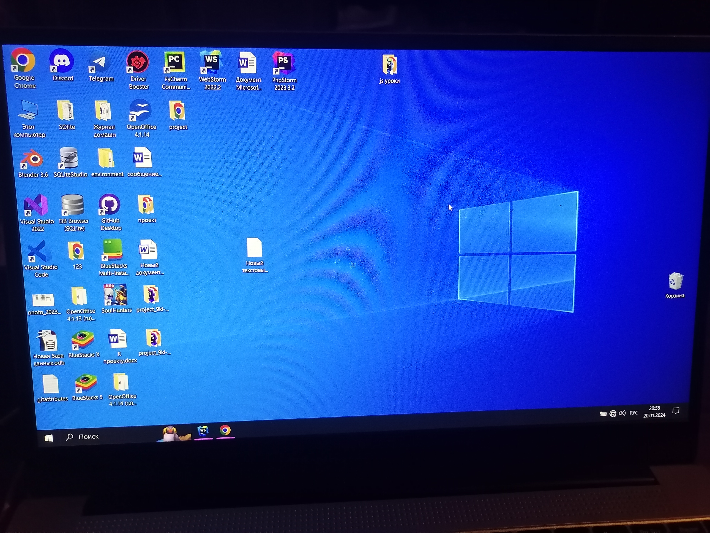

Скриншоты
Если коротко, то скриншот - это снимок экрана. Бывает такие моменты когда надо показать экран телефона или ПК, и не все знают как правильно сделать.
Сравните два примера ниже. Какая выглядит привлекательней?
- Скриншот с ноутбука (ПК)
- Скриншот с телефона 

Для того чтобы сделать скриншот на ПК, следуйте следующей инструкции:
- В правой верхней части клавиатуры найдите и нажмите 1 раз кнопку Prt Src (или Prt Sc)
- Чтобы посмотреть картинку, вы можете вставить ее куда-нибудь, например в Word или Paint.
Если у вас Prt Src находится на F клавише, то зажмите Fn и нажмите на клавишу с текстом Prt Src.